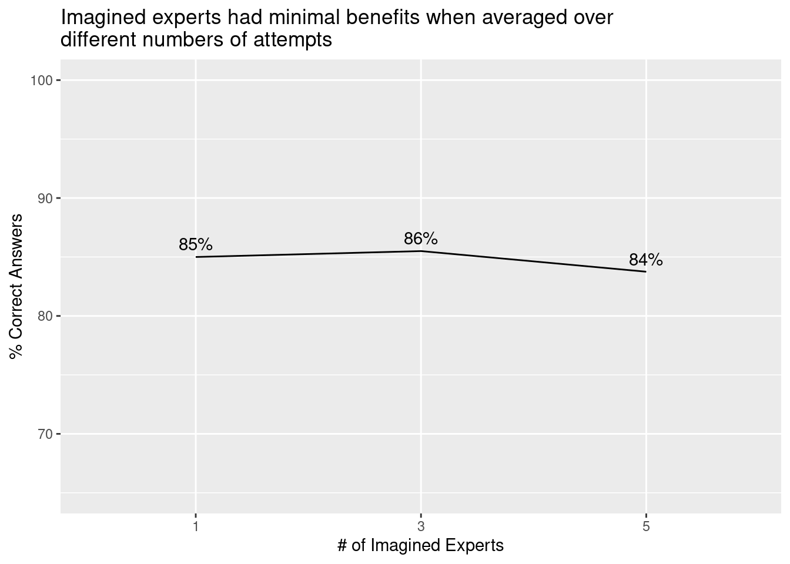
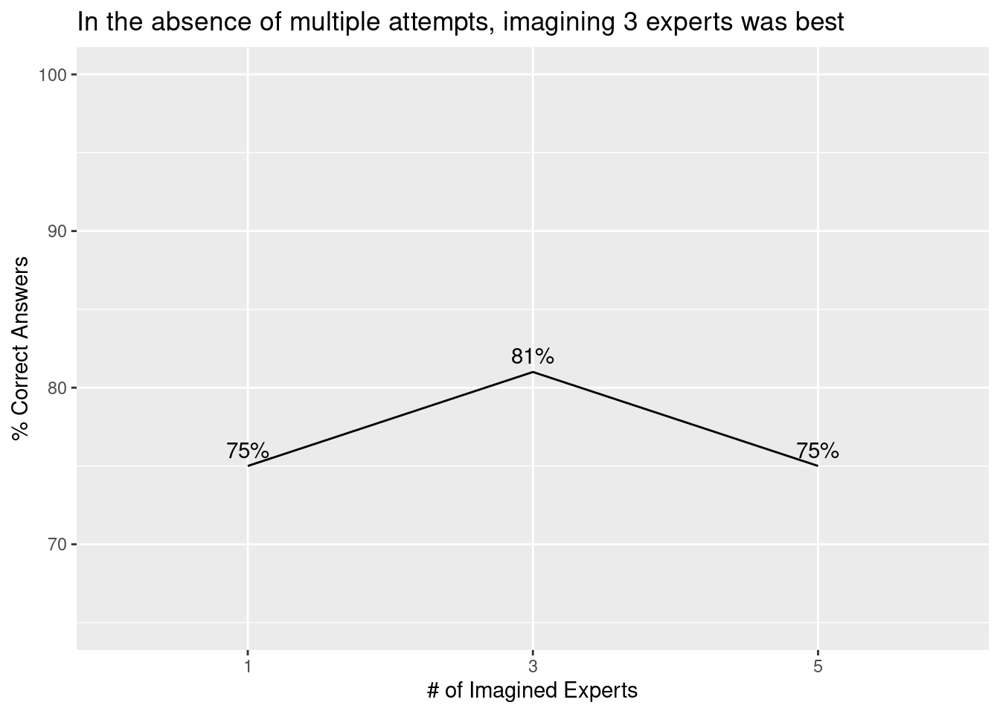
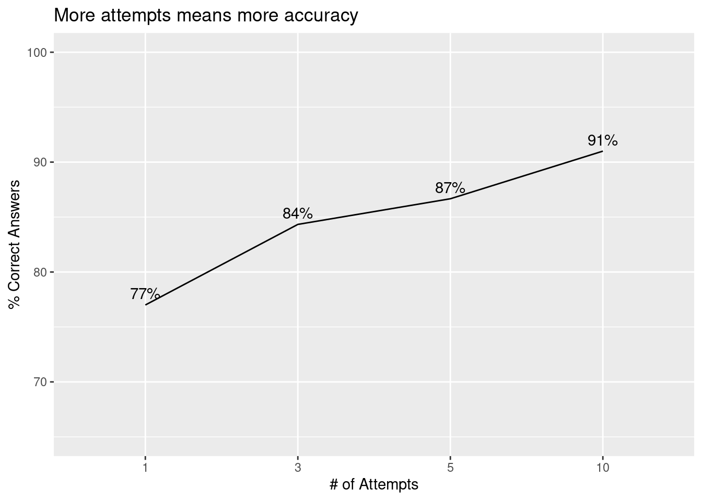

python
import pandas as pd
train = pd.read_json(path_or_buf='train.jsonl', lines=True)
sample = train.sample(n=100, random_state=1) # Random sample of 100 itemsI’ve been interested in AI tutoring applications for education for a long time, and with today’s Large Language Models like GPT, which have been shown to perform extremely well on standardized tests like the SAT and GRE, it seems that building these applications is now achievable. In fact, some companies have already started building these applications, like Khan Academy’s own Khanmigo.
The current generation of LLMs perform pretty well at many tasks, and research (like this paper on chain-of-thought prompting) has shown that there are a variety of “prompt engineering” techniques that can be used to boost performance even further. Basically, prompt engineering refers to the process of writing effective instructions for the model, as well as the process of breaking a complex task into sub-tasks and “chaining” prompts together.
In this post, I use the Self-Consistency prompt engineering strategy to improve the performance of a GPT-3.5 based model tasked with solving problems from the GSM8K (grade school math) benchmark dataset. Conceptually, the Self-Consistency strategy involves asking the LLM to follow multiple reasoning paths to generate multiple answers, and then taking a majority vote of its answers.
I explore implementing the Self-Consistency strategy first by using a single prompt that instructs the model to generate multiple reasoning paths and answers, followed by identifying the majority vote of its own answers – all within a single response. In addition, I explore an implementation in which the LLM is asked to generate an answer multiple times using independent requests to the API, followed by using a simple frequency count to obtain the majority vote of its answers.
Using the Self-Consistency strategy, model performance was increased from 75% correct answers at baseline to 93% with the multiple-attempts implementation. Overall, this analysis suggests that Self-Consistency is an effective strategy to improve LLM performance on cognitive tasks like answering grade school math questions.
(Note: This blog post uses a mix of python and R code.)
First, I’ll sample 100 test cases at random from the GSM8K training dataset. The GSM8K has 8000 cases in total, but every API request takes time and costs money, and I want to keep this reasonable. :)
python
import pandas as pd
train = pd.read_json(path_or_buf='train.jsonl', lines=True)
sample = train.sample(n=100, random_state=1) # Random sample of 100 itemsNext, I’ll define a client function for interfacing with GPT.
python
from openai import OpenAI
client = OpenAI()
def get_response(msg, mod="gpt-3.5-turbo", temp=0):
response = client.chat.completions.create(
model=mod,
messages=msg,
temperature=temp
)
return response.choices[0].message.contentNext, I’ll define some custom prompt functions.
self_consistency_solver() is an implementation of the Self-Consistency prompting strategy within a single prompt. This prompt asks the LLM to “imagine N completely independent experts who reason differently” and also asking it to take the majority vote across these imagined experts. The n_experts parameter identifies how many experts the LLM will be instructed to imagine.
identify_final_answer() is a prompt that takes an LLM’s answer and basically extracts and refines it, because in many cases the answer given will contain lots of extra text.
python
import re
def self_consistency_solver(queston, n_experts):
instructions = f'''
Imagine {n_experts} completely independent experts who reason differently
are answering a question. The question is delimited by triple backticks.
The final answer is obtained by majority vote.
Step 1. For each of the experts, give their step-by-step
reasoning and answer
Step 2. Determine the final answer by majority vote
Step 3. Return the final answer, obtained by majority vote,
prefixed by 'Final answer:'
'''
user_content = f'```{queston}```'
msg = [
{"role": "system", "content": instructions},
{"role": "user", "content": user_content}
]
return get_response(msg=msg, temp=0.5)
def identify_final_answer(question, solution):
instructions = '''
You will be provided with the answer to a math question.
The question is delimited by triple backticks,
and the answer is delimited by triple hashtags.
Step 1. Determine if the answer is expressed as a single number
Step 2. If the answer is not expressed as a single number,
find a way to express it as a single number
Return the final answer, expressed as a single number,
prefixed by 'Final answer:'
'''
try:
answer = solution.split('Final answer: ')[1]
answer = f'###{answer}###'
user_content = f'```{question}```' + answer
msg = [
{"role": "system", "content": instructions},
{"role": "user", "content": user_content}
]
return get_response(msg=msg, temp=0)
except:
return 'NA'Next, I’ll define several other functions. Some of these are used for data wrangling. The most important functions here are multi_step_solver() and get_best_answer, which underlie the second implementation of the Self-Consistency strategy.
This implementation involves asking the LLM to generate a response several times using independent requests to the API, and then using a simple frequency count to obtain the majority vote across its responses. The multiple-attempts implementation is simple: Given a parameter, n_attempts, an API request is sent that many times and the responses are collected into an array, then get_best_answer() is used to find the “best answer” which is the answer most frequently given.
python
from multiprocessing.pool import ThreadPool
def clean_answer(answer):
# Remove everything but numbers in integer or decimal form
answer_clean = re.sub('[^\d\.]', '', answer)
# If the last character is a decimal, remove it, it was probably presented as a sentence
if answer_clean[-1] == '.':
answer_clean = answer_clean[:-1]
# If number contains decimal, decide if it should be removed
if '.' in answer_clean:
# If the number contains only trailing zeroes, strip them and remove it
if answer_clean[-1] == '0' and answer_clean[-2] == '0':
answer_clean = answer_clean.rstrip('0')
answer_clean = answer_clean[:-1]
# If the decimal is now the last character, remove it
if answer_clean[-1] == '.':
answer_clean = answer_clean[:-1]
return answer_clean
def parse_final_answer(evaluation):
try:
answer = evaluation.split('Final answer: ')[1]
return clean_answer(answer)
except:
return 'NA' # Return NA if a final answer could not be found
def get_best_answer(options):
# The best answer is determined by a majority vote;
# in other words, the one with the highest frequency
answer_count = [[x, options.count(x)] for x in set(options) if x not in ['', 'NA']]
answer_count_sorted = sorted(answer_count, key=lambda x: x[1], reverse=True)
if len(answer_count_sorted) > 0:
return answer_count_sorted[0][0]
else:
return 'NA' # Return NA if there were no correct answers
def get_true_answer(answer):
answer = answer.split('### ')[1]
# Remove anything other than a decimal form number (e.g., commas)
answer = re.sub('[^\d\.]', '', answer)
return answer
def multi_step_solver(question, n_experts, n_attempts):
# Pool for parallelization
pool = ThreadPool(n_attempts)
# Generate attempts
attempts = pool.starmap(self_consistency_solver, zip([question]*n_attempts, [n_experts]*n_attempts))
# Identify the final answers
answers = pool.starmap(identify_final_answer, zip([question]*n_attempts, attempts))
# Parse the final answers
answers_parsed = [parse_final_answer(i) for i in answers]
# Identify the best answer
best_answer = get_best_answer(answers_parsed)
# Results
return {
"best_answer": best_answer,
"attempts": attempts,
"answers": answers,
"answers_parsed": answers_parsed
}I’ll use a few loops to run through the test cases, and save the results to a newline-delimited JSON after each one is processed.
python
import ujson as json
# Read previous answers from disk if they exist
try:
df = pd.read_json('answers.ndjson', lines=True)
start = len(df[(df['n_experts'] == 1) & (df['n_attempts'] == 1)]) # Identify where we left off
except:
start = 0
for i in range(start, len(sample)):
for n_attempts in [1, 3, 5, 10]:
for n_experts in [1, 3, 5]:
question = sample.iloc[i].question
true_answer = get_true_answer(sample.iloc[i].answer)
results = multi_step_solver(question, n_experts=n_experts, n_attempts=n_attempts)
with open(f'answers.ndjson', 'a+') as f:
json.dump({
"n_experts": n_experts,
"n_attempts": n_attempts,
"question": question,
"true_answer": true_answer,
"best_answer": results['best_answer'],
"attempts": results['attempts'],
"answers": results['answers'],
"answers_parsed": results['answers_parsed']
}, f)
f.write('\n')Alright! Now that all of the responses has been generated, it’s time for the analysis.
Check that there are 1200 total records.
R
nrow(df)[1] 1200Check that each of the 12 levels has 100 questions each.
As a baseline, I’ll use performance when the model is given 1 attempt using 1 expert.
Baseline performance is 75%.
If the single-prompt “imagined experts” implementation improves performance, then I would expect that prompting the model to imagine 3 (or 5) experts would perform better than asking it to imagine only 1 expert. Contrary to this expectation, I see no improvement.
R
df %>%
group_by(n_experts) %>%
summarize(pct_correct = mean(is_correct)*100) %>%
ggplot(aes(x = n_experts, y = pct_correct, group = 1)) +
geom_line() +
labs(x="# of Imagined Experts",
y='% Correct Answers',
title="Imagined experts had minimal benefits when averaged over\ndifferent numbers of attempts") +
ylim(65, 100) +
geom_text(aes(x = n_experts, y = pct_correct, label = paste0(round(pct_correct), '%')), vjust=-0.5)
However, it’s possible that the improvement is obscured by the fact that I’m taking the average across number of attempts. It’s possible that the two implementations are redundant, and that the single-prompt “imagined experts” implementation is only beneficial when the model is given a single attempt.
Below we can see that if the model is given only 1 attempt, the prompt with 3 experts performed better than the prompt with only 1 imagined expert. There’s also a non-linear pattern, which may suggest that asking the model to imagine too many experts with different reasoning leads to some experts engaging sub-optimal reasoning, which then leads to poorer performance.
R
df %>%
filter(n_attempts == 1) %>%
group_by(n_experts) %>%
summarize(pct_correct = mean(is_correct)*100) %>%
ggplot(aes(x = n_experts, y = pct_correct, group = 1)) +
geom_line() +
labs(x="# of Imagined Experts",
y='% Correct Answers',
title="In the absence of multiple attempts, imagining 3 experts was best") +
ylim(65, 100) +
geom_text(aes(x = n_experts, y = pct_correct, label = paste0(round(pct_correct), '%')), vjust=-0.5)
I expect that when I take the most frequent answer across attempts, performance would improve with the number of attempts (at least, up to a certain point). This would support the multiple-attempts implementation. Indeed this does seem to be the case: Model performance increased linearly with number of attempts, with 10 attempts performing better than 5, 5 better than 3, and 3 better than 1.
R
df %>%
group_by(n_attempts) %>%
summarize(pct_correct = mean(is_correct)*100) %>%
ggplot(aes(x = n_attempts, y = pct_correct, group = 1)) +
geom_line() +
labs(x="# of Attempts",
y='% Correct Answers',
title="More attempts means more accuracy") +
ylim(65, 100) +
geom_text(aes(x = n_attempts, y = pct_correct, label = paste0(round(pct_correct), '%')), vjust=-0.5)
The strongest model was one that was given 10 attempts, with only 1 imagined expert per attempt, which achieved 93% correct answers. This suggests that giving the model multiple attempts, while generating only 1 answer per attempt may be the best implementation of the Self-Consistency strategy.
R
df %>%
group_by(n_attempts, n_experts) %>%
summarize(pct_correct = mean(is_correct)*100, .groups = 'drop') %>%
ggplot(aes(x = n_attempts, y = pct_correct, group = n_experts, color = n_experts)) +
geom_line() +
labs(x="# of Attempts",
y='% Correct Answers',
color="# of Imagined Experts",
title="The best implementation: 10 attempts with 1 imagined expert") +
ylim(65, 100) +
geom_text(aes(x = n_attempts, y = pct_correct, label = paste0(round(pct_correct), '%')), vjust=-0.5)
Overall, this analysis provides strong evidence in favor of the multiple-attempts implementation of Self-Consistency, and weaker evidence in favor of the single-prompt “imagined experts” implementation. The best implementation involved asking the LLM to generate only 1 answer per attempt, while giving it 10 attempts in total. Using this implementation of the strategy, performance was increased from 75% correct answers at baseline to 93% correct answers.